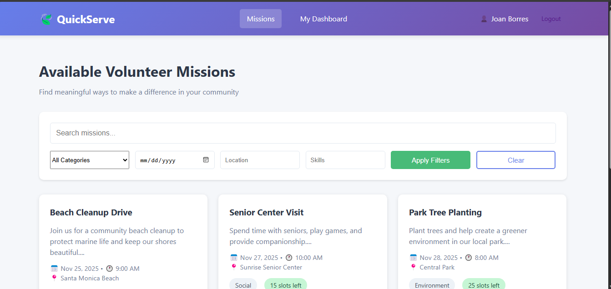

My Projects
Here are some of the projects I've worked on during my IT journey showcasing my growth and skills.

Portfolio Website
A modern, responsive personal portfolio site showcasing my work, skills, and background with dark mode support and smooth animations.
Bank Management System
A comprehensive group project banking system with account management, transactions, and user authentication built using Java and JavaFX.

QuickServe Webapp
A simple web platform that connects student volunteers with short campus and community tasks.